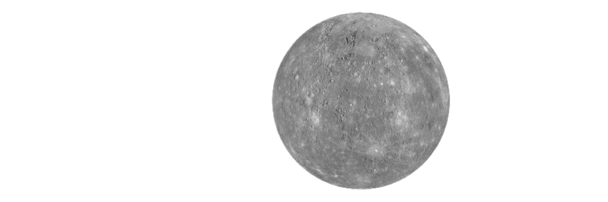
Mercure
La planète la plus proche du Soleil.
Projet scolaire · 2026
Par Yassir et Med Idaddi
Un voyage de 4,6 milliards d'années : des huit planètes aux planètes naines, des lunes glacées aux comètes, découvrez tout ce qui gravite autour de notre Soleil.
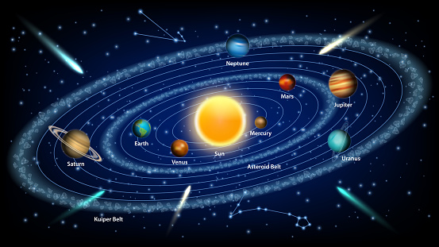
Aperçu
Filtrez par type, puis sélectionnez un astre pour voir sa fiche.

La planète la plus proche du Soleil.
Très chaude à cause de son effet de serre.
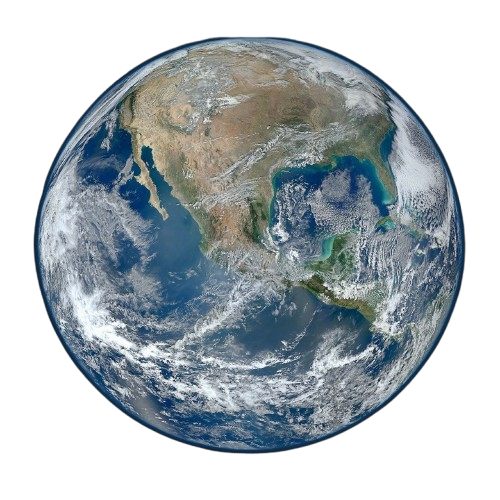
La seule planète connue abritant la vie.
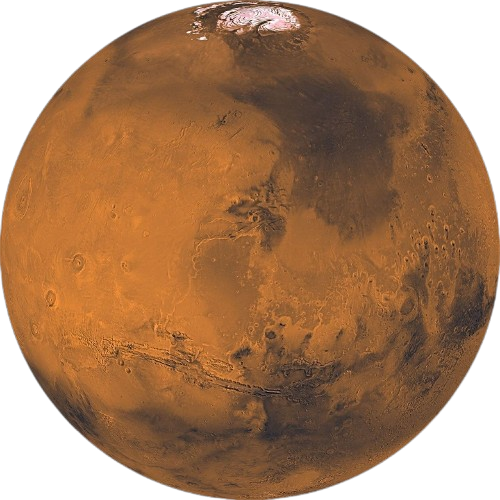
La planète rouge.
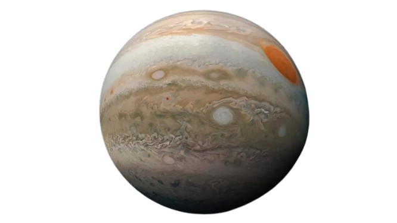
La plus grande planète du système solaire.
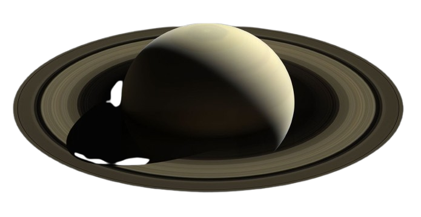
Célèbre pour ses anneaux.
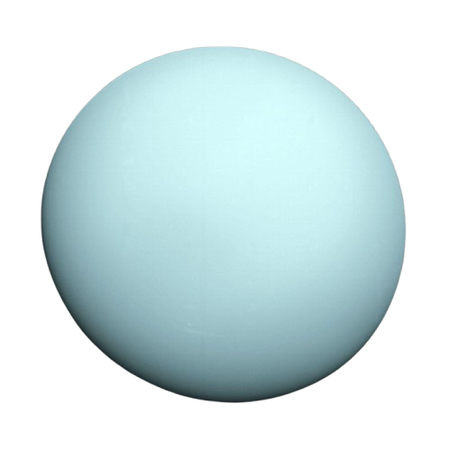
Une planète glacée inclinée.
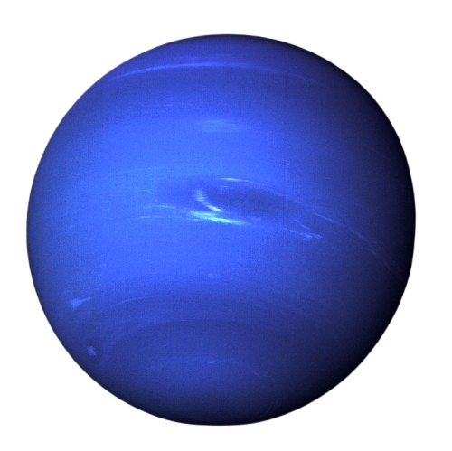
La planète la plus éloignée du Soleil.
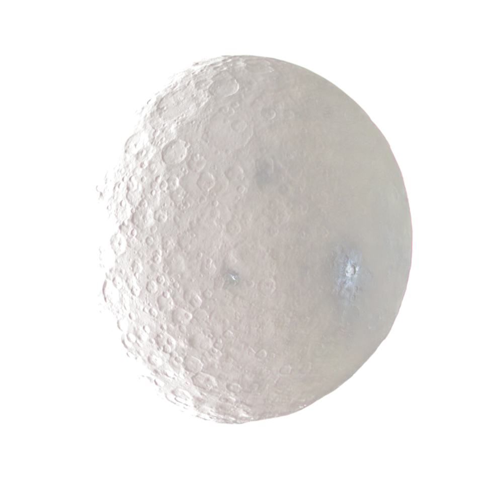
La plus grande planète naine de la ceinture d'astéroïdes.
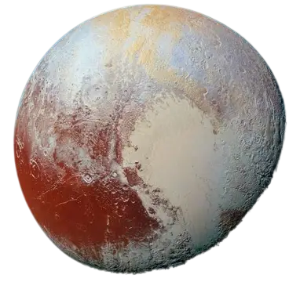
Reclassée planète naine en 2006.
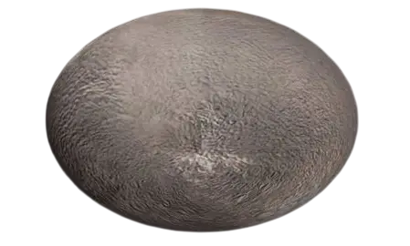
Une planète naine allongée qui tourne très vite.
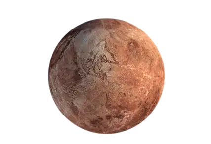
Une planète naine rougeâtre de la ceinture de Kuiper.
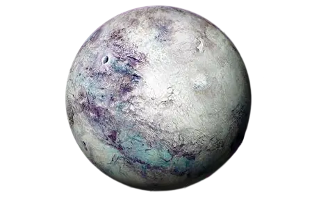
Aussi massive que Pluton, elle a motivé sa reclassification.
Aucun astre dans cette catégorie.
Simulation
Visualisation interactive du système solaire fournie par la NASA.
Fiches
Mercure est la planète la plus proche du Soleil. Dépourvue d'atmosphère significative, elle subit des écarts de température extrêmes entre le jour et la nuit (jusqu'à 430 °C le jour, −180 °C la nuit).
Vénus est la planète la plus chaude du système solaire à cause de son atmosphère très dense, composée majoritairement de dioxyde de carbone. Sa pression au sol est 92 fois plus élevée que sur Terre.
La Terre est la seule planète connue qui abrite la vie. Son atmosphère riche en oxygène, son eau liquide et son champ magnétique protecteur en font un monde unique dans le système solaire.
Mars est surnommée la planète rouge à cause de l'oxyde de fer présent à sa surface. Elle abrite le plus grand volcan du système solaire, Olympus Mons (21 km de haut), et pourrait servir à une future colonisation humaine.
Jupiter est la plus grande planète du système solaire : 11 fois le diamètre de la Terre. C'est une géante gazeuse dont la Grande Tache Rouge est une tempête plus large que notre planète, active depuis plus de 350 ans.
Saturne est célèbre pour ses magnifiques anneaux, composés de glace et de poussière. Elle est si peu dense qu'elle flotterait sur l'eau — c'est la seule planète du système solaire dans ce cas.

Uranus est une planète glacée qui tourne presque couchée sur elle-même : son axe est incliné d'environ 98° par rapport à son orbite. Elle effectue un tour complet du Soleil en 84 années terrestres.

Neptune est la planète la plus éloignée du Soleil. Elle est balayée par les vents les plus violents du système solaire, qui peuvent dépasser 2 000 km/h. Une année neptunienne dure 165 années terrestres.
Satellites naturels
Le système solaire compte plus de 891 lunes confirmées. En voici quelques-unes parmi les plus fascinantes.
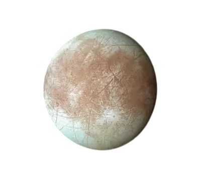
Sous sa croûte de glace, Europe abrite un océan d'eau salée contenant deux fois plus d'eau que tous les océans terrestres réunis. La mission Europa Clipper, lancée en octobre 2024, doit déterminer si cet environnement pourrait abriter la vie.
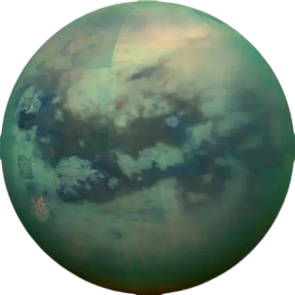
Titan est plus grande que Mercure. Elle possède une atmosphère épaisse et un cycle du méthane : des pluies d'hydrocarbures liquides tombent sur des montagnes de glace, formant rivières, lacs et mers. C'est la seule lune connue avec une atmosphère dense.
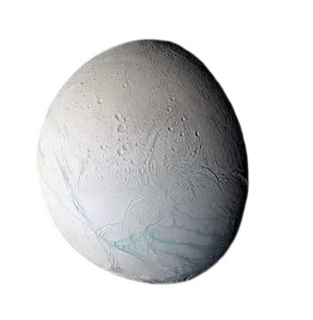
Cette petite lune glacée projette des geysers de vapeur d'eau et de particules de glace depuis un océan souterrain, visible au pôle sud. C'est l'une des cibles les plus prometteuses dans la recherche de vie extraterrestre.
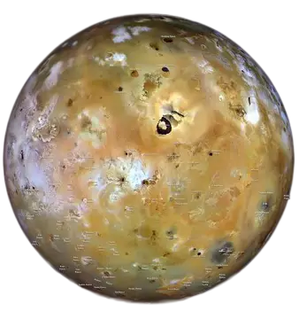
Io est le corps le plus volcaniquement actif du système solaire : plus de 400 volcans actifs y sont recensés. Les forces de marée de Jupiter chauffent son intérieur et projettent des panaches de soufre jusqu'à 500 km d'altitude.
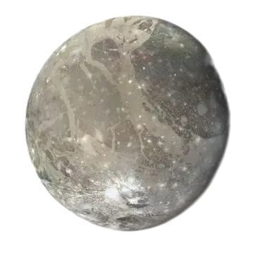
Ganymède est la plus grande lune du système solaire — plus grande que Mercure. Elle est aussi la seule lune connue à posséder son propre champ magnétique. La mission JUICE de l'ESA doit l'explorer à partir de 2031.
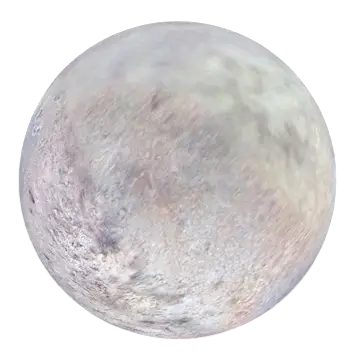
Triton est la plus grande lune de Neptune. Elle orbite en sens inverse de la rotation de sa planète — un cas unique parmi les grandes lunes. Des cryovolcans y projettent de l'azote glacé. Elle serait un objet de la ceinture de Kuiper capturé par Neptune.
Petits corps
Le système solaire ne se résume pas aux planètes : des millions de petits corps orbitent autour du Soleil.
Ce sont des mondes rocheux et sans air qui orbitent autour du Soleil. Ce sont des vestiges de la formation du système solaire. La ceinture principale, entre Mars et Jupiter, en contient des centaines de milliers.
Ce sont des « boules de neige sales » : un noyau glacé contenant des gaz gelés, de la roche et de la poussière. Près du Soleil, la glace se sublime et forme une chevelure et deux queues (poussière et gaz).
Lorsqu'un météoroïde entre dans l'atmosphère terrestre à grande vitesse, la friction le fait briller : c'est une « étoile filante ». Les fragments qui atteignent le sol sont des météorites.
Au-delà de Neptune s'étend un vaste anneau glacé peuplé de planètes naines (Pluton, Hauméa, Makémaké, Éris) et de millions d'objets transneptuniens. C'est le vestige des origines du système solaire.
Une immense coquille hypothétique de corps glacés, située entre 2 000 et 100 000 UA du Soleil. C'est de là que proviendraient les comètes à longue période.
Située entre Mars et Jupiter, elle abrite plus d'un million d'astéroïdes de plus de 1 km. Le plus grand, Cérès, a été reclassé planète naine en 2006.
Exploration
L'humanité explore le système solaire depuis plus de 60 ans. Voici quelques missions qui ont marqué l'histoire.
Lancées en 1977, les sondes Voyager ont survolé Jupiter, Saturne, Uranus et Neptune. Elles se trouvent aujourd'hui à plus de 20 milliards de kilomètres de la Terre, explorant la frontière avec l'espace interstellaire.
Lancée en 2006 par la NASA, cette sonde a survolé Pluton en 2015, offrant les premières images détaillées de sa surface et révélant des plaines de glace d'azote.
Lancée en octobre 2024, cette mission étudie Europe, la lune glacée de Jupiter, pour déterminer si son océan souterrain pourrait abriter les conditions de la vie.
En orbite autour de Saturne de 2004 à 2017, cette mission a étudié ses anneaux et ses lunes. La sonde Huygens s'est posée sur Titan en 2005, une première dans le système solaire externe.
Rover de la NASA posé sur Mars en 2021, il recherche des traces de vie ancienne, collecte des échantillons et a fait voler le premier hélicoptère sur une autre planète (Ingenuity).
Lancée en 2023 par l'Agence spatiale européenne, la sonde JUICE (JUpiter ICy moons Explorer) doit étudier Ganymède, Europe et Callisto à partir de 2031.
Origines
Il y a environ 4,6 milliards d'années, un vaste nuage de gaz et de poussière — la nébuleuse solaire — s'est effondré sur lui-même, probablement à cause de l'onde de choc d'une supernova proche. Au centre, la matière s'est concentrée pour former le proto-Soleil, dont les réactions nucléaires se sont allumées. Autour, les grains de poussière se sont agglomérés pour donner naissance à des planétésimaux, puis aux planètes.
Les planètes telluriques (Mercure, Vénus, Terre, Mars) se sont formées près du Soleil, où il faisait trop chaud pour que les glaces et les gaz subsistent. Plus loin, au-delà de la ligne des glaces, les géantes gazeuses (Jupiter, Saturne) et les géantes de glace (Uranus, Neptune) ont pu capturer d'énormes quantités de gaz et de glace, grossissant jusqu'à dominer le système.
Aujourd'hui, notre système solaire orbite autour du centre de la Voie lactée à environ 828 000 km/h, et met 230 millions d'années pour en faire le tour.